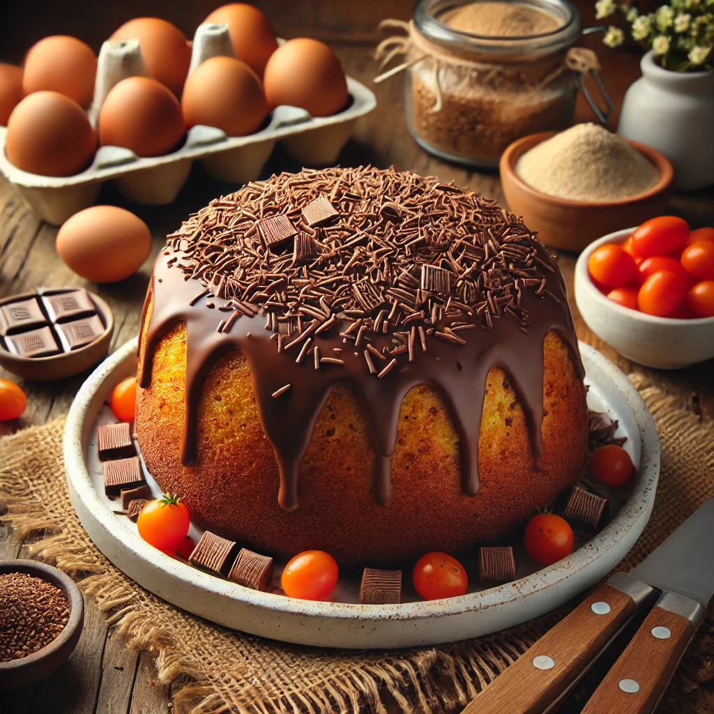

Receita de Bolo de Cenoura

Ingredientes
Para o bolo:
- 3 cenouras médias descascadas e picadas
- 3 ovos
- 1 xícara de óleo vegetal
- 2 xícaras de açúcar
- 2 xícaras de farinha de trigo
- 1 colher de sopa de fermento em pó
Para a cobertura:
- 1 xícara de açúcar
- 4 colheres de sopa de cacau em pó
- 4 colheres de sopa de manteiga
- 4 colheres de sopa de leite
Modo de Preparo
- Pré-aqueça o forno a 180°C. Unte e enfarinhe uma forma de aproximadamente 22cm de diâmetro.
- No liquidificador, adicione as cenouras picadas, os ovos e o óleo. Bata até obter uma mistura homogênea.
- Em uma tigela grande, misture o açúcar e a farinha de trigo. Despeje a mistura do liquidificador sobre os ingredientes secos e misture bem.
- Adicione o fermento em pó e misture delicadamente até incorporar.
- Despeje a massa na forma preparada e leve ao forno preaquecido por aproximadamente 40-45 minutos, ou até que um palito inserido no centro do bolo saia limpo.
- Enquanto o bolo assa, prepare a cobertura: em uma panela, misture o açúcar, o cacau em pó, a manteiga e o leite. Leve ao fogo médio, mexendo sempre, até ferver e engrossar um pouco.
- Retire o bolo do forno e espalhe a cobertura ainda quente sobre ele. Deixe esfriar antes de servir.